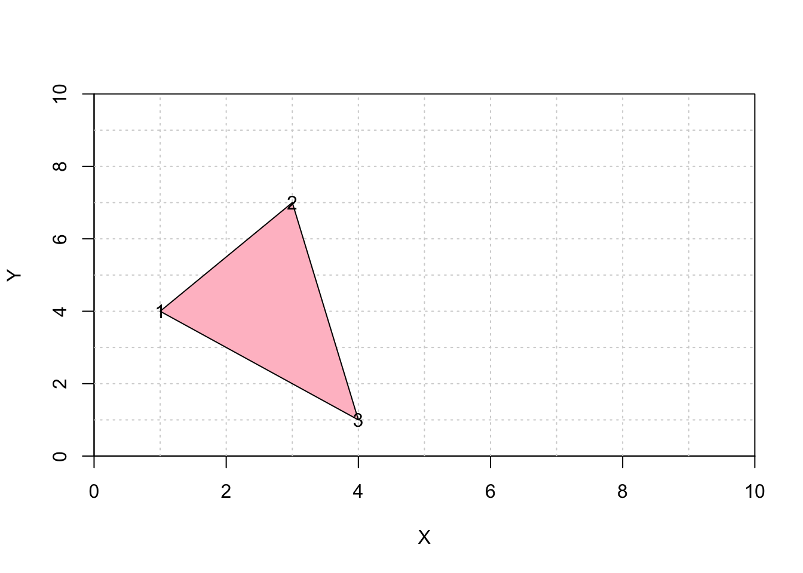

In this post I create some polygons and line segments with LearnGeom.

1. Set Up
To create coordinate planes, trianges, and line segments I will be using the LearnGeom package.
library(LearnGeom)2. Coordinate Plane
To create a coordinate plane I will first need to define x and y minimums and maximums, and then plot the planes with the CoordinatePlane() function.
x_min <- 0
x_max <- 10
y_min <- 0
y_max <- 10
LearnGeom::CoordinatePlane(x_min, x_max, y_min, y_max)
NULL3. Polygons
To create a triangle with labels:
Print the coordinate plane I just created.
Define three points of a triangle.
Use
CreatePolygon()function to create the polygon.Use the
Draw()function to draw the polygon.Define
label = TRUEto show the points of a triangle.
LearnGeom::CoordinatePlane(x_min, x_max, y_min, y_max)NULLP1 <- c(1,4)
P2 <- c(3,7)
P3 <- c(4, 1)
Poly <- LearnGeom::CreatePolygon(P1, P2, P3)[1] "Some of the inserted points are collinear. This could lead to a defective polygon."LearnGeom::Draw(Poly, c("pink"), label = TRUE)
NULLTo create a trapezoid:
Print the coordinate plane I just created.
Define four points of a trapezoid.
Use
CreatePolygon()function to create the polygon.
Note: The order of points will matter.
- Use the
Draw()function to draw the polygon.
LearnGeom::CoordinatePlane(x_min, x_max, y_min, y_max)NULLP4 <- c(6, 3)
P5 <- c(8, 3)
P6 <- c(9, 8)
P7 <- c(7, 8)
Poly2 <- LearnGeom::CreatePolygon(P4, P5, P6, P7)[1] "Some of the inserted points are collinear. This could lead to a defective polygon."LearnGeom::Draw(Poly2, c("light blue"))
NULLWe can also print both polygons on the same graph, shown below.
LearnGeom::CoordinatePlane(x_min, x_max, y_min, y_max)NULLLearnGeom::Draw(Poly, c("pink"), label = TRUE)NULLLearnGeom::Draw(Poly2, c("light blue"))
NULL4. Angle and Point Line Segments
To create a Segment Angle:
Print the coordinate plane I just created.
Define a points where the line originates from.
Define the angle of the line.
Define the length of the line.
Use
CreateSegmentAngle()function to create the line segment.Use the
Draw()function to draw the line.
LearnGeom::CoordinatePlane(x_min, x_max, y_min, y_max)NULLP <- c(0,0)
angle <- 30
len <- 10
Segment <- LearnGeom::CreateSegmentAngle(P, angle, len)
LearnGeom::Draw(Segment, "blue")
NULLSegment Point
To create a Segment (with) Point(s):
Print the coordinate plane.
Define two endpoint.
Use
CreateSegmentPoint()function to create the line segment.Use the
Draw()function to draw the line.
LearnGeom::CoordinatePlane(x_min, x_max, y_min, y_max)NULLP1 <- c(2,8)
P2 <- c(8,6)
Segment <- LearnGeom::CreateSegmentPoints(P1, P2)
LearnGeom::Draw(Segment, "purple")NULL